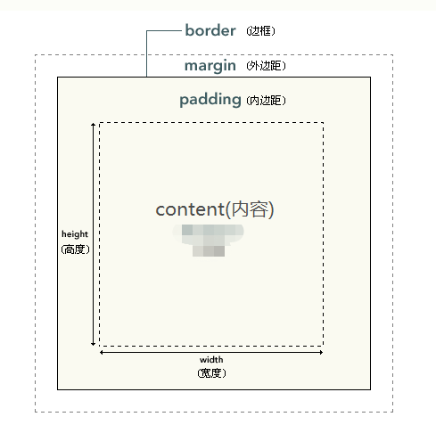
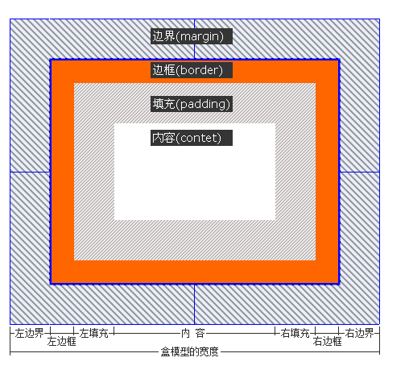

本文主要汇总开发中前端布局，遇到的小问题以及对小问题的研究
框模型：元素本身大小的控制
关于width,heigh,padding,border,margin的关系

对于框模型已经较为熟悉了，但有一点height与width属性都是内容部分的属性，而不是整个元素的属性。元素的宽度 = width + 2padding + 2border + 2*margin

100%的设置尺寸问题
子元素继承父元素的width是content，子元素尺寸100%的设置时，不能再设置padding、border、magin等宽度，否则就会超出限制1
2
3
4
5
6
7
8
9
10
11.parent{
height: 300px;
width: 300px;
border: 1px solid red;
}
.child{
height: 100%;
width: 100%;
border: 50px solid green;
}这样的child元素的尺寸会超出父元素parent，因为child元素的尺寸已经是100%父元素的内容了，父元素没有设置border，而子元素增加border的宽度，这样就会超出了100px。
居中的一种实现：
.center-me { margin: 0 auto; }
子元素与父元素尺寸（width， height）关系
若父元素与子元素都设置了尺寸，则各自按照自己的设置进行。
height展现了一种自下向上的尺寸影响路线：子元素设置的height,会决定父元素的height；父元素的height不会影响子元素的height。
width展示了从上而下的影响路线：父元素设置的width，会决定子元素的width；子元素的width设置不会影响父元素的width。
position: 元素位置的控制
关于position,top,right,bottom,left的使用
1 | position: relative/absolute/fixed |
文档流
将窗体自上而下分成一行行, 并在每行中按从左至右的顺序排放元素,即为文档流。
只有三种情况会使得元素脱离文档流，分别是：浮动、相对定位和固定定位。
静态定位
static，无特殊定位，它是html元素默认的定位方式，即我们不设定元素的position属性时默认的position值就是static，它遵循正常的文档流对象，对象占用文档空间，该定位方式下，top、right、bottom、left、z-index等属性是无效的。相对定位相对的是它在文档流中的位置而进行偏移，且不脱离文档流
绝对定位：absolute
使用absoult定位的元素脱离文档流后，就只能根据祖先类元素(父类以上)进行定位，而这个祖先类还必须是以postion非static方式定位的
relative和static方式在最外层时是以body标签为定位原点的，而absoulte方式在无父级是position非static定位时是以html作为原点定位。html和body元素相差9px左右
absoulte定位要加 top:0; left:0。因为我们如果使用absoulte或fixed定位的话，必须指定 left、right、 top、 bottom 属性中的至少一个，否则left/right/top/bottom属性会使用它们的默认值 auto，简单讲就是都变成relative。
少了left/right/top/bottom属性不行，那如果我们多设了呢？例如，我们同时设置了top和bottom的属性值，那元素又该往哪偏移好呢？记住下面的规则：
如果top和bottom一同存在的话，那么只有top生效。
如果left和right一同存在的话，那么只有left生效。absoulte是根据祖先类的border进行的定位
固定定位：fixed
fixed定位，又称为固定定位，它和absoult定位一样，都脱离了文档流，并且能够根据top、right、left、bottom属性进行定位，但不同的是fixed是根据窗口为原点进行偏移定位的，也就是说它不会根据滚动条的滚动而进行偏移。
z-index属性
z-index，又称为对象的层叠顺序，它用一个整数来定义堆叠的层次，整数值越大，则被层叠在越上面，当然这是指同级元素间的堆叠，如果两个对象的此属性具有同样的值，那么将依据它们在HTML文档中流的顺序层叠，写在后面的将会覆盖前面的。需要注意的是，父子关系是无法用z-index来设定上下关系的，一定是子级在上父级在下。
使用static 定位z-index属性是无效的
flex: 浮动
display: flex
待整理…
阮一峰：Flex 布局教程
其他
屏幕适应
待整理css文档流与DOM树
待整理
css是按DOM树的叶子节点还是根节点进行样式的刷新的。
屏幕宽度与文档宽度的差异